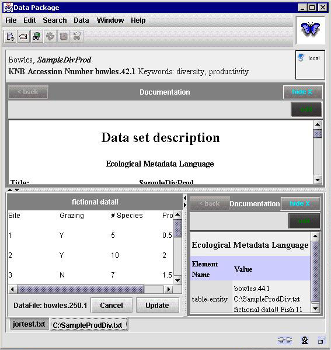
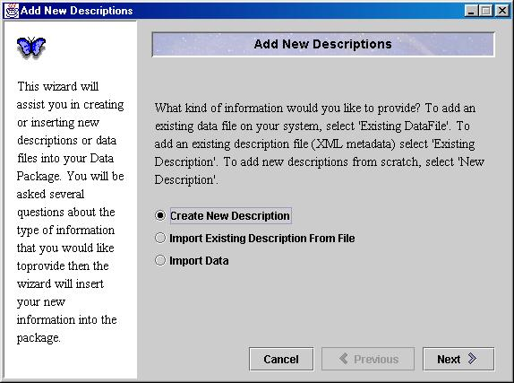
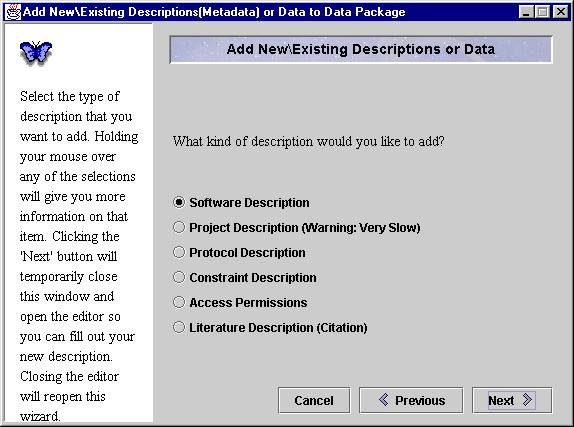

Morpho
User Guide
|
Morpho
User Guide
|
||||||
| KNB Home | Data | People | Informatics | Biocomplexity | Education | Software | |
| Editing an Existing Package | |
|
Package Editor
The Package Screen allows you to manipulate an existing data package. You can choose to edit existing documentation about the package or table by clicking the corresponding "Edit" button as shown below.  Add New Description Wizard
The New Description Wizard allows you to add information to your package to more accurately describe your dataset. The wizard also allows you to add a data file to your package. You may add as many data files to your package as you wish. To add a new description, go to the Data pull-down menu and select "Documentation". The first question that the wizard asks is what type of information you would like to add. Select whether you would like to add a new data file or a new description (metadata) file. You will probably need to know a bit about each of these categories beforehand in order to effectively choose the right description file for adding more metadata! 
|
|
|
|
 Previous
Table Editor Previous
Table Editor
|